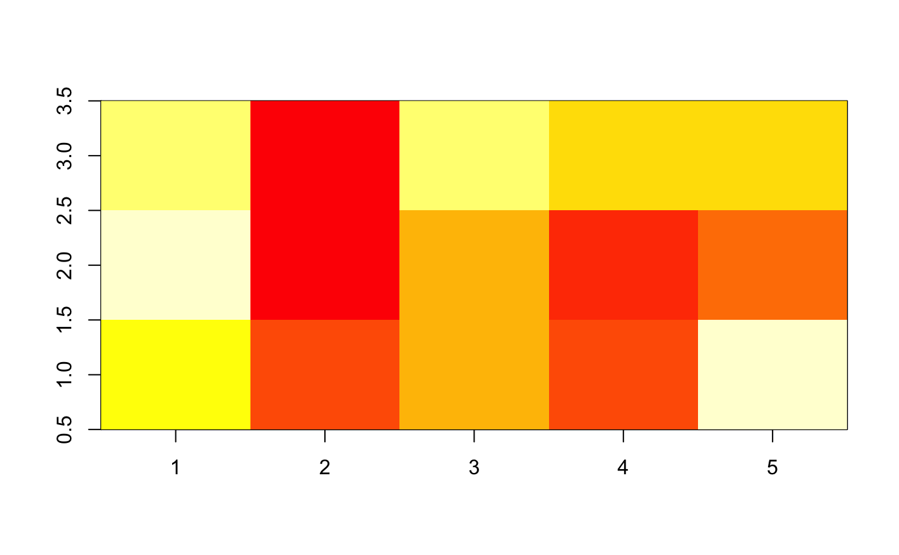

Broom tidies a number of lists that are effectively S3
objects without a class attribute. For example, stats::optim(),
svd() and akima::interp() produce consistent output, but because
they do not have a class attribute, they cannot be handled by S3 dispatch.
These functions look at the elements of a list and determine if there is
an appropriate tidying method to apply to the list. Those tidiers are
themselves are implemented as functions of the form tidy_<function>
or glance_<function> and are not exported (but they are documented!).
If no appropriate tidying method is found, throws an error.
xyz lists (lists where x and y are vector of coordinates
and z is a matrix of values) are typically used by functions such as
graphics::persp() or graphics::image() and returned
by interpolation functions such as akima::interp().
tidy_xyz(x, ...)
| x | A list with component |
|---|---|
| ... | Additional arguments. Not used. Needed to match generic
signature only. Cautionary note: Misspelled arguments will be
absorbed in |
A tibble::tibble with vector columns x, y and z.
tidy(), graphics::persp(), graphics::image(),
akima::interp()
Other list tidiers: glance_optim,
list_tidiers, tidy_irlba,
tidy_optim, tidy_svd
A <- list(x = 1:5, y = 1:3, z = matrix(runif(5 * 3), nrow = 5)) image(A)tidy(A)#> # A tibble: 15 x 3 #> x y z #> <int> <int> <dbl> #> 1 1 1 0.705 #> 2 2 1 0.263 #> 3 3 1 0.549 #> 4 4 1 0.315 #> 5 5 1 0.923 #> 6 1 2 0.995 #> 7 2 2 0.00309 #> 8 3 2 0.527 #> 9 4 2 0.191 #> 10 5 2 0.355 #> 11 1 3 0.907 #> 12 2 3 0.141 #> 13 3 3 0.911 #> 14 4 3 0.590 #> 15 5 3 0.625